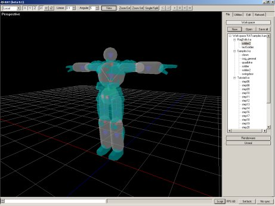
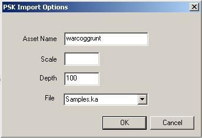
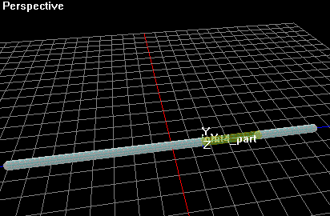
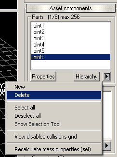
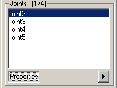
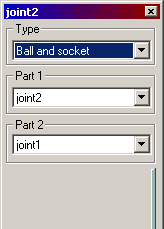
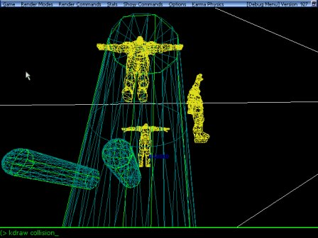

UDN
Search public documentation:
KarmaAuthoringTool
Interested in the Unreal Engine?
Visit the Unreal Technology site.
Looking for jobs and company info?
Check out the Epic games site.
Questions about support via UDN?
Contact the UDN Staff
KarmaAuthoringTool
Document Summary: An introduction to using the Karma Authoring Tool (KAT) for setting up ragdolls. Document Changelog: Last Updated by Chris Linder (DemiurgeStudios?) to update and also add step-by-step importing instructions. Original Author was Ian Tierney.- KarmaAuthoringTool
- Related Documents
- Overview
- Support
- Getting KAT
- Using KAT
- Using Physic assets
- Ragdoll Example
- Detailed Step-by-Step Ragdoll Importing
- Step 1: Making a Model
- Step 2: Exporting the PSK
- Step 3: Importing the PSK into UnrealEd
- Step 4: Importing the PSK into KAT
- Step 5: Editing your Asset
- Step 6: Making a Class For Your Ragdoll
- Step 7: Placing your Ragdoll in a Level in UnrealEd
- Step 8: Look, Pretty... Mostly
- Step 9: With What the Ragdoll Will Collide
- Things to watch out for
- Conclusion
Related Documents
KarmaAuthoringToolTutorial, RagdollsInUT2003, KarmaReference, ModelingTableOfContents The KAT User Guide is available as a PDF attached to this document.Overview
We've already seen how to create simple physics bodies and place them into a level, but if you want to create more complex assets with multiple joints etc. you can use the Karma Authoring Tool or KAT. In this document I'm going to briefly discuss creating complex physical assets and using them in Unreal. An "asset" is a single physical system than can be placed in a level. The only use for Karma Assets (stored in .ka files) in Unreal currently is 'rag-doll' physics. KAT creates these assets and outputs .ka files. Unreal can then load any assets from any .ka file in the KarmaData directory. There can be many Karma assets stored in a single .ka file. When using KAT, never use the same asset name twice (even between .ka files) because it is the asset name itself, not the name of the .ka file, that is important. Unreal will look in every .ka file for an asset until it finds it.Support
For information about KAT support see the MathEngineStatus. This document is private and you must login to access it.Getting KAT
KAT is free with Karma. You can download KAT 1.2 here. KAT 1.2 is also available on the third CD of UT2003.Using KAT

KAT is a tool for the creation of complex physical assets. Using KAT you can:- create and adjust physical properties such as mass.
- You can also fit/adjust collision geometries to graphics.
- You can join together multiple parts with joints and motorise joints to create physical machines.
- When you've build a physics asset you can simulate it and tweek it to see how it acts.
Using Physic assets
Note that a single .ka file can contain multiple Assets. For example "927\KarmaData\Ragdolls.ka" contains two ragdoll assets, each of which can be used seperatly. An important issue to be aware of is scale. You must be carefull that the physics paramters are appropriate for your game. To ensure this keep the following in mind:- Things in KAT are 50 times smaller than in Unreal. A scale factor of 0.02 will scale approriately.
- Also scale for your graphics. So if you use a scale factor of 8 for your graphic in Unreal, scale your graphics by 0.16 (0.02 x 8) when you import the .PSK in KAT. The graphics scale factor should include the actors DrawScale, DrawScale3D, and any scaling on import.
- Be consistent, use the same scaling factors through out.
- The Largest mass to smallest mass ratio should not exceed 100.

Ragdoll Example
I'm now going to show you how to get the ragdoll into your unreal level. See the attached KAT tutorial for how to create a ragdoll from a .psk file. Theres a script called RagDoll_COGGrunt.uc in 927 build you'll find it here "\927\WarClassLight\Classes" The two lines you'll have to change are as follows:- Mesh=SkeletalMesh'COGStandardSoldiers.COGGruntMesh'
- KSkeleton="soldier2"
Detailed Step-by-Step Ragdoll Importing
This section will step you through importing your own ragdoll starting from the modeling program, through KAT, through UnrealEd, and into the game. This example will show how to use Karma Ragdolls as items you place in a level or spawn as separate objects during game-play. This example does not explicitly go over how to switch the physics of an animated mesh to ragdoll physics but this example (mainly the first part) will still be useful.Step 1: Making a Model
Make a skeletal mesh as you normally would. If you already have a skeletal mesh, one of you characters for example, you can skip this step. You need to rig the mesh you make but you do not need to animate it. I have included a Maya file of a VERY simple skeletal mesh called KarmaTube.mb. For more details on creating a models see the ModelingTableOfContents.Step 2: Exporting the PSK
Once you have your model, create the PSK using ActorX. For more details on ActorX see one of these documents: ActorX, ActorXMaxTutorial, ActorXMayaTutorial, ModelingTableOfContents. Create the PSK as you normally would and save it somewhere that is easy to find. It helps if you put it in the "KarmaData" directory in you build. You will need the PSK not only to import the model into UnrealEd but also to create the Karma Ragdoll. The PSK for the example KarmaTube can be found here: KarmaTube.PSKStep 3: Importing the PSK into UnrealEd
Import the PSK as you normally would. In the case of the KarmaTube example, I put the KarmaTube in a package called MyKarmaRagdolls.ukxStep 4: Importing the PSK into KAT
First, make sure you have KAT installed on your machine. Next, open KAT. If you have not read the Mouse Controls document that is in the start menu with KAT, I highly suggest doing this.- Open up KAT. Click the "Workspace" pull-down and select "New". Type a name for the workspace like "MyKarmaWorkSpace.kaw" and click "Save".
- Now click the "File" pull-down and select "New". Type a name like "MyKarmaAssets.ka" and click "Save". This assets file can contain many ragdoll assets.
- Click the "Asset" pull-down and select "New". Under "Type" switch to "Unreal Skeleton Import". Type a name for your asset, something like "MyRagdoll" and click "OK". Now find your PSK you saved from Step 2 above and click "Open".
- In the workspace expand your asset file (MyKarmaAssets.ka for example) and double click the asset you just created (MyRagdoll for example). The "Edit" tab should open up and you should see your model with the auto-generated collision.
- Next you need to make sure you have the skin attached to your asset so you can see more than just the motion of the bones. Click on the "Browse >>" button under the "Skin" section and find your PSK, then click "Open". Now you are ready to edit your asset.
Step 5: Editing your Asset
Once you have the asset in KAT you can edit it in many ways. The attached PDF, KAT User Guide, goes over how to navigate around the program and edit assets. For this example, I will go over how to edit the KarmaTube. When the KarmaTube is first imported it looks like this:
This will work ok and can be used in-game but some tweaks will improve it. The first is that there are too many bones. The last bone at the end of the chain, "joint6", is not necessary; it was only put in the model to auto-generate all the collision (if the skeleton does not include the extra bone, you have to add the collision to the last bone manually). To delete this bone, select it in the parts window and click the pull-down arrow below the list and select delete like so:
Now we need to change the joint types from "Ball and socket" to "Skeletal". This is because ball and socket joints allow twisting which makes the KarmaTube look like a Tootsie Roll. Skeletal joints allow you to constrain not only twisting but rotating as well. You can either lock rotation for both "Twist" and "Cone" rotation or specify a stiffness and damping. We will just be using the default skeletal joint settings which lock the twist and put some stiffness and damping on the cone rotation. To change the joint type go the joints window and click "Properties" to pull up the joint properties window.

In the joint properties window change the type from "Ball and socket" to "Skeletal" (the change will take place immediately). You can now select the next joint and change its type as well. Once you have changed the type of all four joints you can close the properties window. These is all the changes we are going to make for now. Go up to the top and click "Save" and you are done and ready to make a class for this ragdoll. Note: You should not change the names of Parts, Joints, or Geometry in KAT because then it will not match up the PSK, obviously.Step 6: Making a Class For Your Ragdoll
Below is an example class for the KarmaTube ragdoll. To use a different model and karma asset simply change the Mesh to a mesh you want, and change the KSkeleton to an appropriate karma asset generated in KAT that matches the mesh. You of course, can also change the collision and physics properties; these are just some defaults that work well. (For more details on collision see the Actor Variables document.)
class KarmaTubeRagDoll extends KActor
placeable;
defaultproperties
{
DrawType=DT_Mesh
Physics=PHYS_KarmaRagDoll
bCollideActors=True
bCollideWorld=True
bProjTarget=True
bBlockActors=False
bBlockNonZeroExtentTraces=True
bBlockZeroExtentTraces=True
bBlockPlayers=False
bWorldGeometry=False
bBlockKarma=True
CollisionRadius=+00085.000000
CollisionHeight=+00085.000000
Begin Object Class=KarmaParamsSkel Name=Squibble0
KSkeleton="MyRagdoll"
KFriction=0.1
KStartEnabled=False
Name="Squibble0"
End Object
KParams=KarmaParams'Squibble0'
Mesh=Mesh'MyKarmaRagdolls.KarmaTube'
}
Now compile the script package you put this class in and you are ready to drop the ragdoll in a level.
Step 7: Placing your Ragdoll in a Level in UnrealEd
Open up UnrealEd and either open or create a level. Now go to the Actor browser and drop in your ragdoll which can be found under Actor->KActor. In the case of the KarmaTube, drop in a KarmaTubeRagDoll. You can set the KStartEnabled to true under the properties of the object under Karma->KParams->KarmaParamsSkel->KarmaParams and this will cause the ragdoll to immediately start interacting with the world. Otherwise you will have to shoot the ragdoll or it will just hang in space.Step 8: Look, Pretty... Mostly
Now play the level and watch the ragdoll fun. Things will work pretty well but there are a few problems. The first is that until a ragdoll is active, the mesh of the actor will be all squished weird. The collision of the ragdoll will be where mesh is supposed to be. You can see this by typing "KDraw Collision" at the console in-game. The easiest way to avoid this problem is to never have an inactive ragdoll. This can be done by always setting KStartEnabled to true as described in the section above or by addingKStartEnabled=true to the KParams in defaultproperties of the ragdoll class.
The second problem is that ragdolls are culled based on where their root is. In the case of the KarmaTube for example, the root is at one of the ends and so when you are just looking at the other end, the entire ragdoll will sometimes disappear. You can fix this by adjusting the visibility bound for the skeletal mesh in the animations browser. Open the Mesh properties in the Mesh tab and increase the size of MaxVisBound and MinVisBound.
Step 9: With What the Ragdoll Will Collide
The ragdoll we have created so far will collide with BSP, Blocking Volumes, and static meshes with karma collision set up properly. (See the CollisionTutorial for more details on creating and setting up collision for a static mesh. You do not need collision volumes for the static mesh to collide with a ragdoll, you just need to set the static mesh properties correctly.) The ragdoll we have created will not collide with other KActors or karma objects such as vehicles. This ragdoll will also not collide with the player or any pawns in the game.Things to watch out for
Scale
Like I said earlier the main problems are with scale but if you're consistent and keep you graphics and phsyics in an appropriate scale for your level you should be OK. Heres a couple of common problems, both of which can are caused by bad scaling.- After placing a ragdoll in a level it disappears, when you shoot it.
- Ragdoll has poor collision in the level but the collison you fitted in KAT seemed to be OK.

You can then see if your collision models are in scale with your graphics. If they are not be sure to include the correct scaling factor in KAT.